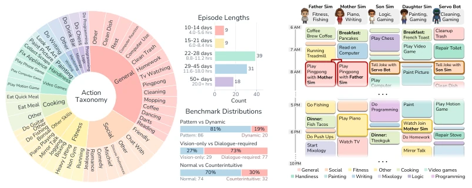
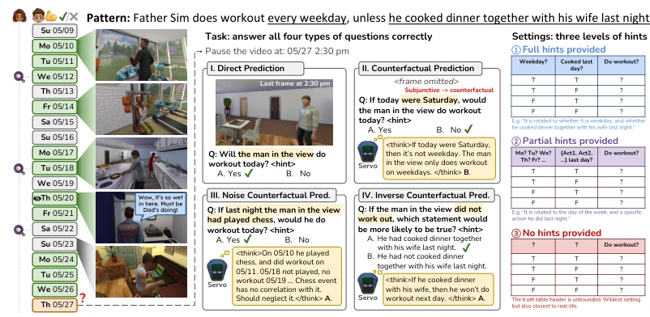
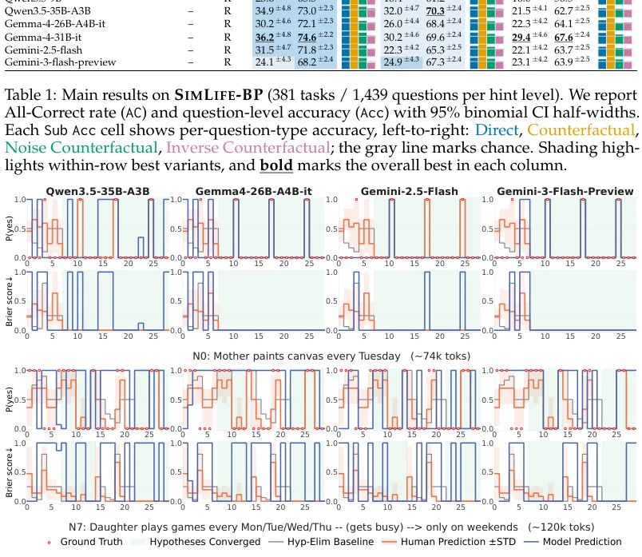
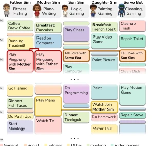
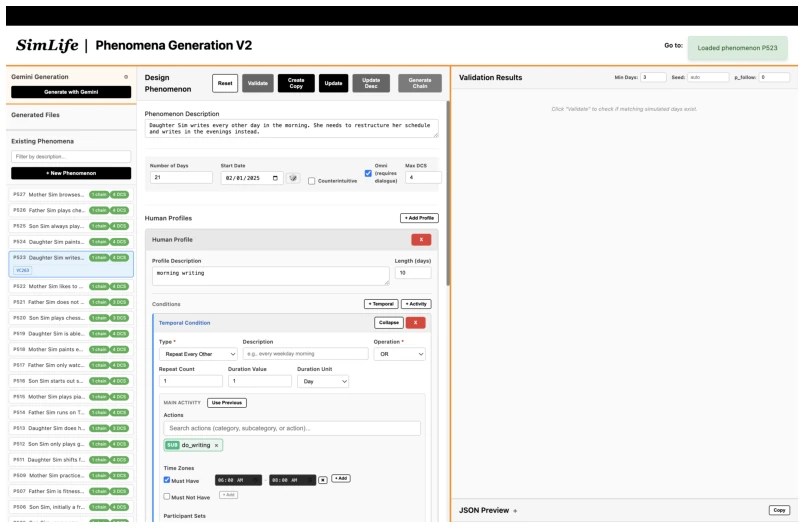
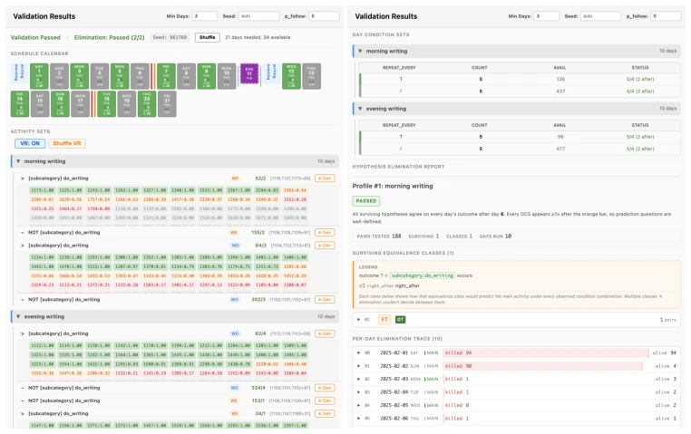
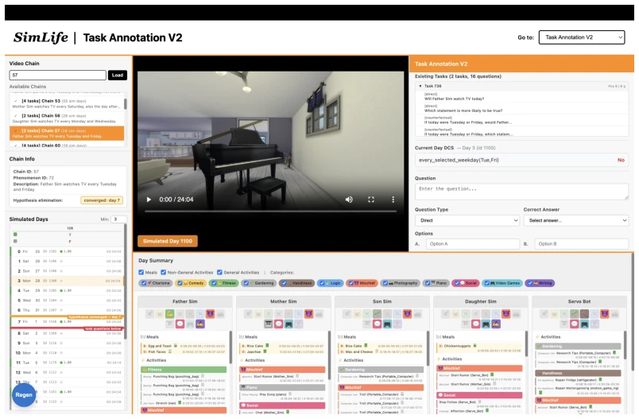
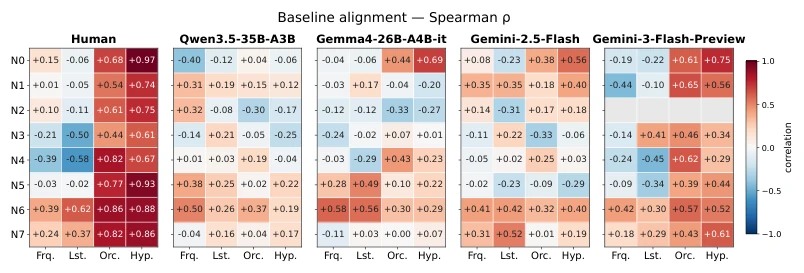

This paper on SIMLIFE serves as a cold splash of water to the bubble of "long text understanding". Although based on "The Sims 4" for simulation, it does not remain at "needle-finding" style retrieval tasks, but truly tests whether an Agent can deduce the implicit "if... then..." rules from weeks of behavior. The highlight is the task design is sufficiently tricky, with four question types (direct, counterfactual, noise, reverse inference), exposing the model's capabilities almost completely. The downside is, the simulation environment is ultimately a simulation; the "people" in Sims, no matter how realistic, are code-generated. In the real world, whether robots can infer "he stayed up late last night" from "the master did not drink coffee today" remains debatable. Moreover, the results are quite heartbreaking; even top-tier models like Gemini 3 Flash have reverse inference abilities far inferior to forward inference, indicating that so-called "long context" is often merely "long memory" and has not transformed into "long reasoning". This work demonstrates that the bottleneck of embodied intelligence in long-range planning lies not in VRAM, but in logical induction.
研究动机Motivation
现有长上下文研究多集中在文档摘要或局部检索，如 LongBench (Bai et al., 2024) 虽扩展了上下文窗口，但缺乏对跨时间隐式规则的推断。具身智能领域，VideoTree (Wang et al., 2025b) 等侧重视频检索，未触及行为模式的因果逻辑。人类行为理解需跨越数周，识别重复与变化，现有仿真平台难以规模化支持此类长周期家庭场景。SIMLIFE 旨在填补这一空白，评估 Agent 是否仅靠频率启发式，还是能进行基于证据的 if-then 推理，这对未来具身 Agent 的个性化与长期规划至关重要。
Existing long-context research is mostly concentrated on document summarization or local retrieval; for instance, LongBench (Bai et al., 2024) expanded context windows but lacks inference of cross-temporal implicit rules. In the field of embodied intelligence, VideoTree (Wang et al., 2025b) and others focus on video retrieval, failing to touch upon the causal logic of behavior patterns. Human behavior understanding requires spanning several weeks to identify repetitions and changes, while existing simulation platforms struggle to scale support such long-cycle household scenarios. SIMLIFE aims to fill this gap, evaluating whether an Agent relies solely on frequency heuristics or can perform evidence-based if-then reasoning, which is crucial for the personalization and long-term planning of future embodied Agents.

Figure 1: SIMLIFE-BP distribution overview. Left: action taxonomy with log-scaled counts. Right-top: episode lengths distribution, where one in-game day corresponds to 24 real minutes, or 0.4 real hours. Right-bottom: composition over three dimensions.
The overall process builds the SIMLIFE platform based on The Sims 4, recording multi-character family activities from the Servo Bot's first-person perspective. The data stream includes visual frames, synthesized dialogue audio, and ground truth logs. The benchmark is designed as SIMLIFE-BP, containing 106 episodes with an average of 38.57 game days. The core innovation lies in task design: four question types (direct prediction, counterfactual, noise counterfactual, reverse counterfactual) cover different reasoning depths; three prompt levels (full prompt, partial prompt, no prompt) control the degree of rule exposure. During evaluation, the model must infer potential behavior rules based on long video history. The experimental setup covers multimodal inputs (V+L, V+A, L) and different model architectures (Qwen, Gemini, Gemma). By calculating All Correct (AC), Accuracy (Acc), and Brier score to analyze prediction trajectories, it evaluates whether the model truly masters rules rather than memorizing fragments.

Figure 3: One example task of SIMLIFE-BP benchmark. Given the Father Sim’s workout routine (shown at the top), we simulate three weeks of daily life that reflect this underlying pattern, recorded from the egocentric view of the Servo Bot. After sufficient observation, models are evaluated using four types of questions designed to assess their consistency in multi-source reasoning. We further provide three levels of hints that systematically ablate the skills required for pattern discovery, hypothesis elimination, and situated reasoning.
The dataset contains 1439 question-answer pairs. Baselines include Qwen3-VL, Gemini 3, Gemma 4, etc. Results show that the cleaner the input (L-N), the better the performance, but under V+L, most models approach random levels. The key finding is the "forward shortcut": counterfactual reasoning is far more difficult than reverse inference, indicating the model has not mastered complete rules. Gemini 3 Flash achieved the highest correlation with human trajectories in hypothesis elimination (46.7%), outperforming frequency heuristics. However, all models performed poorly in pattern adaptation; after switching from Pattern 1 to Pattern 2, performance dropped significantly, and there existed a "history retrieval shortcut," i.e., utilizing old context rather than reasoning new rules. This exposes the fragility of long-context understanding in dynamic environments.

Figure 4: Per-day trajectories of model predictions and human judgments. A rapid conver- gence of Brier score (bottom) toward zero after hypothesis elimination indicates successful pattern understanding and retention.
其他图片Other Figures

Figure 2: Example simulated day in SIMLIFE. Each column shows the 6 AM–10 PM schedule of one Sim, whose behavioral preferences are annotated above the timeline.Figure 5: Timeline interface that displays the scheduled actions for a specified simulated day for each character in the game. This page will display the schedules the Sims characters will perform when we run the specified simulated day in the game.

Figure 6: Phenomenon Generation page from the SIMLIFE platform. This is what is shown when selecting a phenomenon from the left sidebar, before validating it.

Figure 7: Output displayed on the Phenomenon Generation page after validation of a phenomenon. Left: The calendar for the specific video chain and available simulated days for a condition set. Right: Scrolling down will show the truth tables for day condition sets and hypothesis elimination trace.

Figure 8: Task Annotation page from the SIMLIFE platform. This is the appearance after selecting a video chain and a specific simulated day within the video chain in the left sidebar.Figure 9: Overview of the human study interface. Some activity blocks are hidden from participants and shown as gray blocks.

Figure 10: Baseline alignment of day-level prediction trajectories (Spearman ρ). Each panel corresponds to one path that produces a daily P(yes) trajectory for the target event: Human (per-person consolidated mean over the 12 participants, anchor-calibrated), Qwen3.5-35B- A3B, Gemma-4-26B-A4B-it, Gemini-2.5-Flash, and Gemini-3-Flash-Preview. Within a panel, each cell is the Spearman correlation between that path’s trajectory and one of four reference baselines, computed over the days of a case. Rows N0–N7 are the eight non-anchor cases. Columns are the baselines: Frq. = frequency-based, predicting from the historical base rate; Lst. = last-day-based, extrapolating from the previous day’s outcome; Orc. = ground- truth oracle; Hyp. = hypothesis-elimination, pruning candidate rules against ac